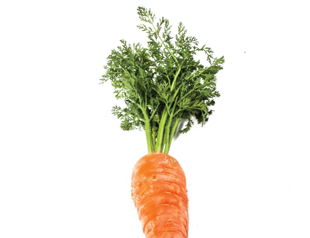
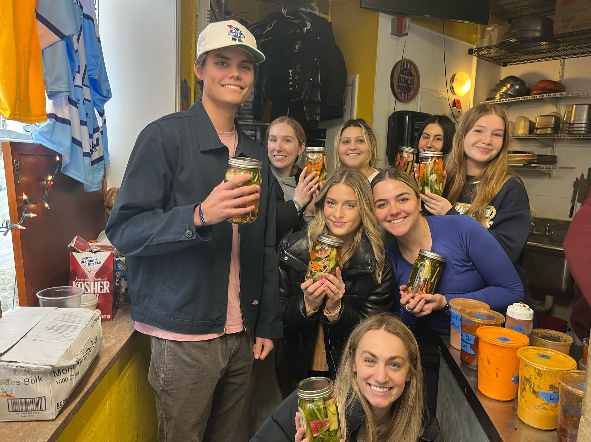
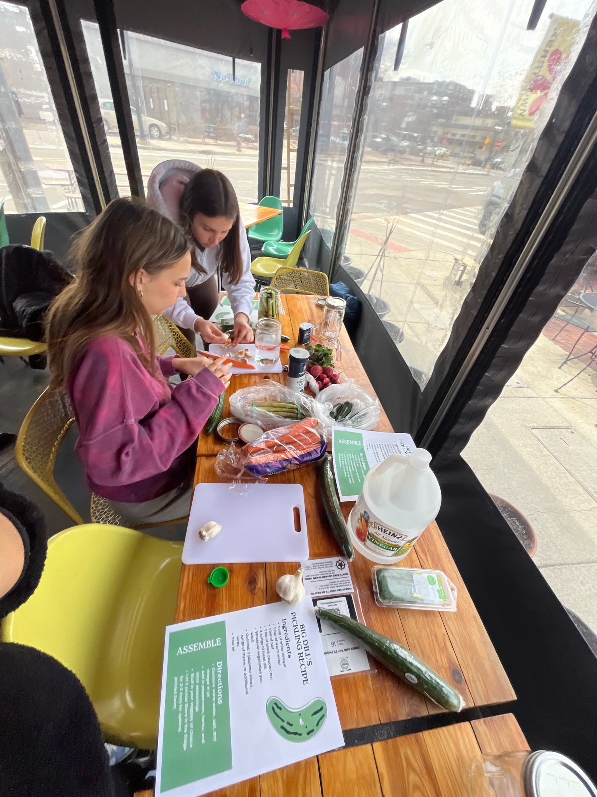
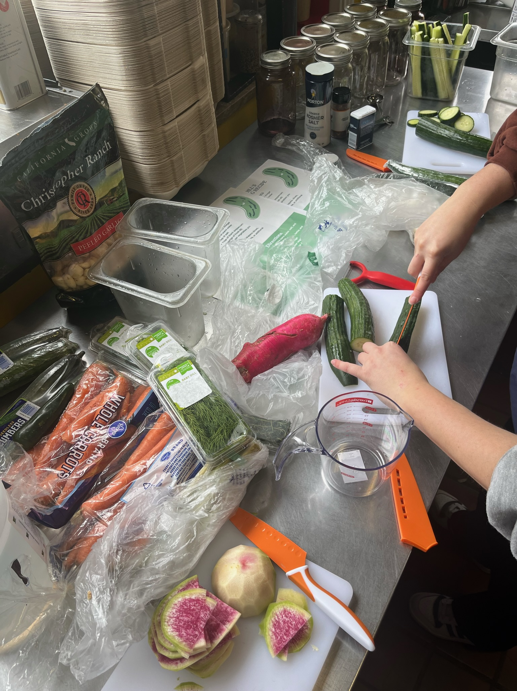
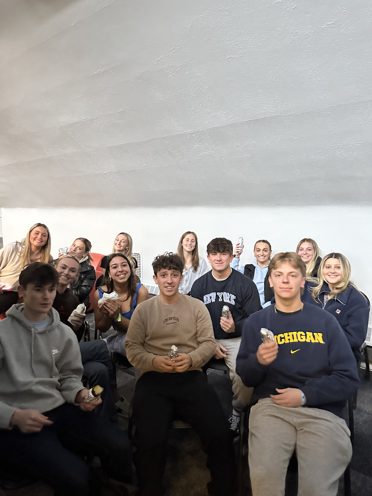
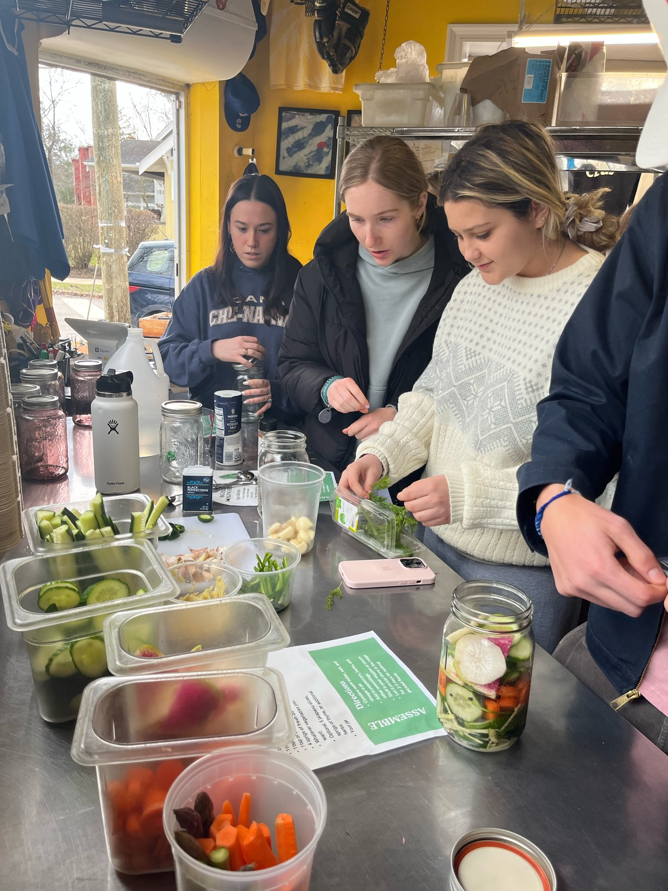
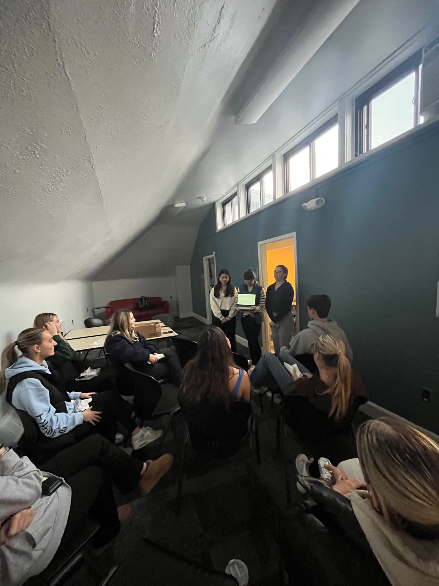
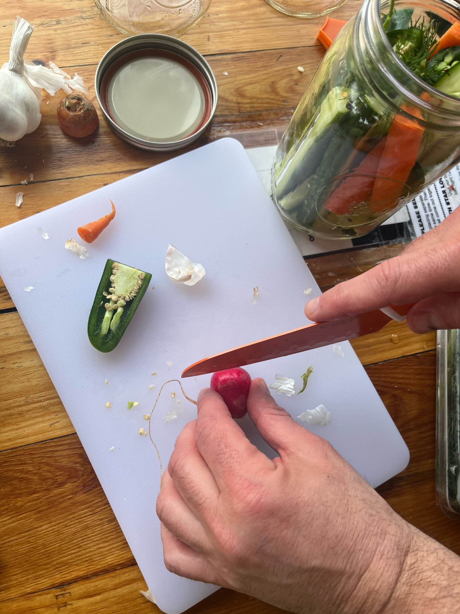
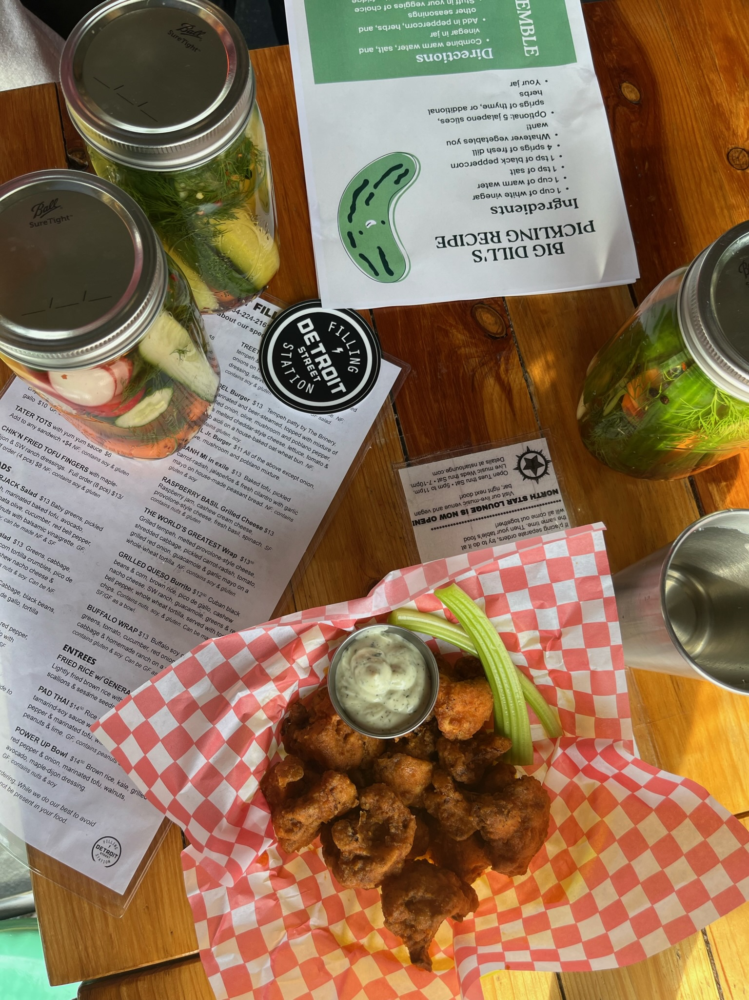
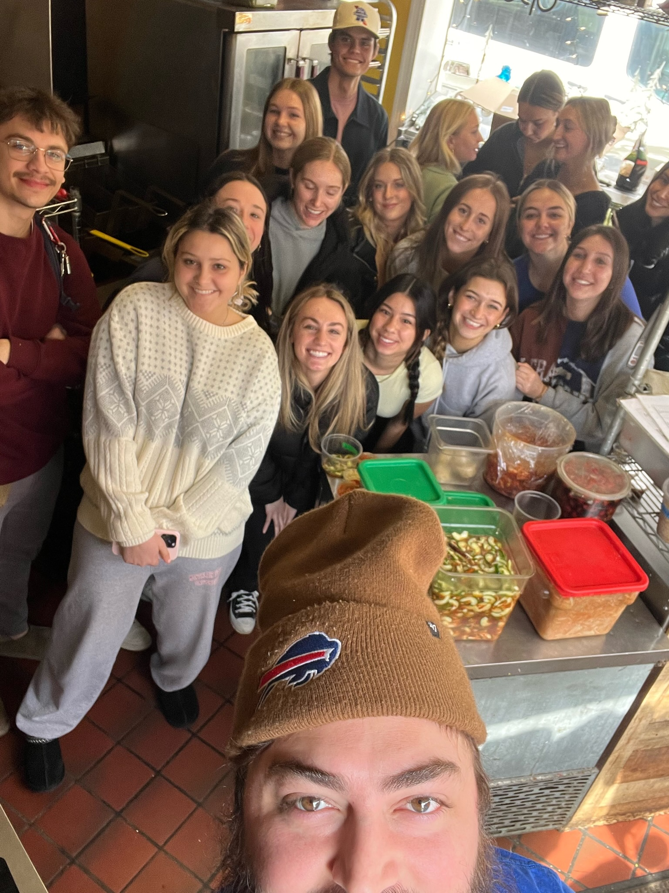

We are Big Dill, Michigan's first pickling club.
We are an organization at the University of Michigan dedicated to sharing our love for all things pickled. Whether you want to learn how to pickle vegetables, are looking for a fun new community, or just love pickles, Big Dill welcomes all!
Carrot all to learn more?
Check out some photos from our events!
More to come in the fall...
        